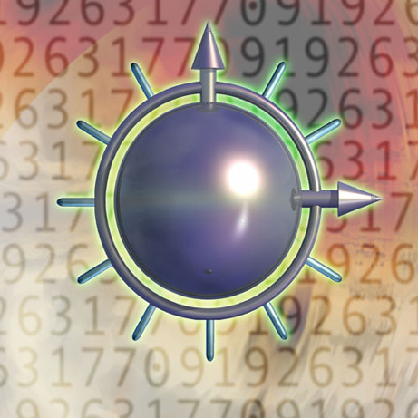

|  |
Discovered by : R. Bunsen and G. R. Kirchhoff in Heidelberg, Germany
Year discovered : 1860
Origin : The name is derived from the Latin caesius, ‘sky blue’.
Description :
A soft, gold-coloured metal that is quickly attacked by air and reacts explosively in water. It is used in industry as a catalyst promoter, to make special glass, and in radiation monitoring equipment. The ‘caesium clock’ (atomic clock) is the standard measure of time: the electron resonance frequency of the caesium atom is 9,192,631,770 cycles per second. |